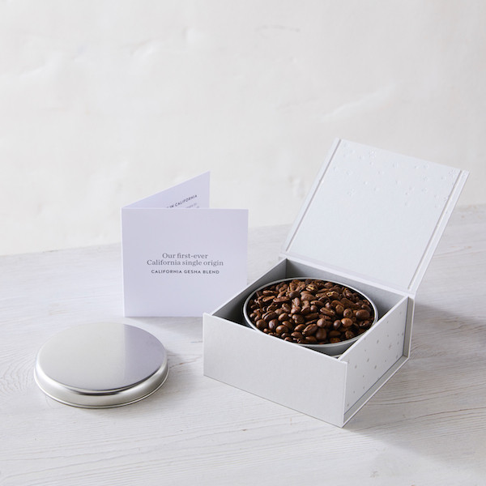
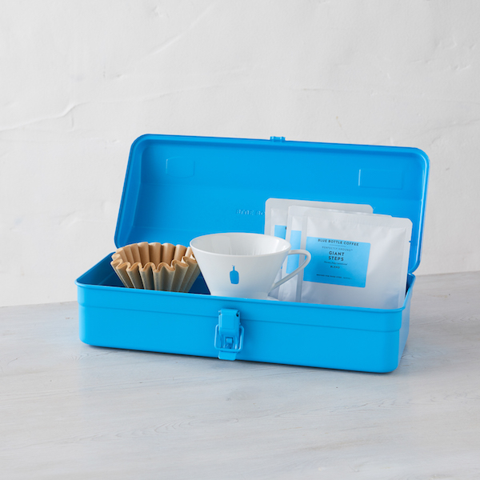
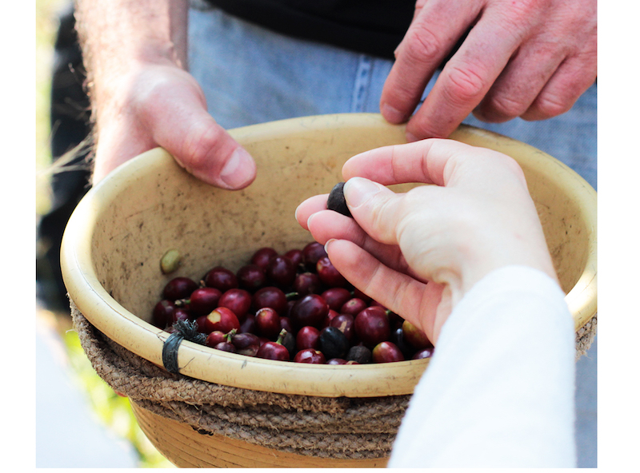
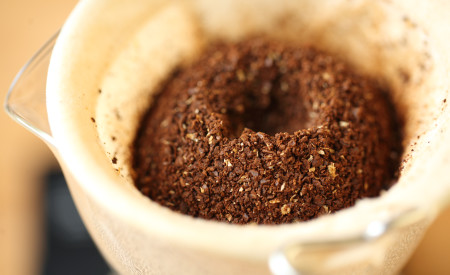

-
总是提供美味，可持续来源的咖啡的好处是，我们可以确保所有的客人，从休闲饮用者到咖啡狂热者，都会喜欢它们。提供这么多咖啡（以及酿造工具，礼品和纪念品）的棘手问题是什么？选择一款适合生活中咖啡爱好者的产品。
即使他们自己从未尝试过，咖啡同修也只会凭声誉知道Gesha。这种栽培品种也被称为艺伎，据信起源于埃塞俄比亚，并于2004年在Hacienda La Esmeralda赢得卓越杯时突破了特色咖啡。以其茶般的美味和不寻常的美味而闻名，这种经常挑剔的植物即使在其自然栖息地也难以成长，但总部位于圣巴巴拉的农民Jay Ruskey在过去十年中一直在开发技术来实现这一目标。通过他的努力，我们能够分享这种Gesha和Caturra混合物，这种混合物在加利福尼亚州生长。
有蓝色瓶装蓝色和蛋壳白色可供选择
无论是作为世界上最坚固的包装纸做双重任务，还是用咖啡和酿造工具包装，或者是用于坑塞，picnicker或项目实施者的独立礼品，这款Trusco工具箱都可以无限量地定制。
在高峰美味的地方烤制和预制，这个单一的起源是热带风情
有时喝咖啡太多了，卓越是不可避免的。这一种植物生长在危地马拉西南部的Finca El Injerto，位于近乎完美的小气候和高原上，用于咖啡种植。凭借我们专有的 Perfectly Ground技术，我们可以在无氧外壳中精确研磨和密封这一技术。您的礼品收件人将感谢您制作这款“令人惊叹的咖啡宝石”，正如我们的绿色买家所描述的那样，更容易享受。
Blue Bottle Holiday Collection 拥有令人愉悦的世界。
-
分享这个故事
也在顾客评价 专业提示：更好的Nel Drip咖啡
理解一种诱人的方法由蓝瓶工作人员
联系我们

查看BLUE COFFEE微博
庆祝咖啡的艺术和科学
阅读更多>